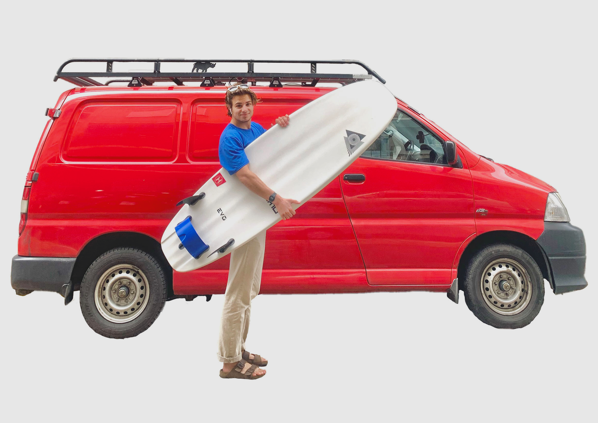

Bulding a campervan
In the last year I got hooked on van conversion videos. The design and human factors challenge in making a single room that meets the day to day needs of person is an interesting challenge.
I finally took the plunge and purchased an old work van. I renovated the interior, added solar powered electronics and fitted cabinets, bed and a desk.
The build took a month, the biggest challenges included attempting carpentry on a budget whilst trying to retain a quality finish. Another challenge was trying to plan out the space to figure out optimal layouts and dimensions.

There are many choices when it comes to purchasing a van. My priorities, included an empty van (so I build it from the ground up), reliability and low price. I wanted a powerful van that could take all my surfboards but not too large that I would struggle to find parking spaces.
The most popular van that fits the bill is the VW T4 van. However, for half the price and twice the reliability I could purchase a Toyota Hiace. I really liked the vehicles design and they had a cult following due to their invincible engines.

The first step was to remove all the wooden pannelling and treat any surface rust.

Taking measurements, I made a 3D model of the van. This allowed me to settle on a design, figure out costings and how much material needed.

Adding the wall panels was the most time consuming step. It takes multiple cuts to make them fit right.